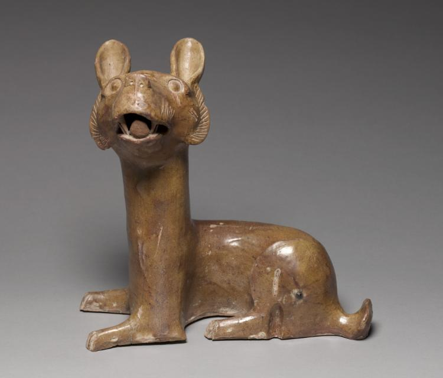
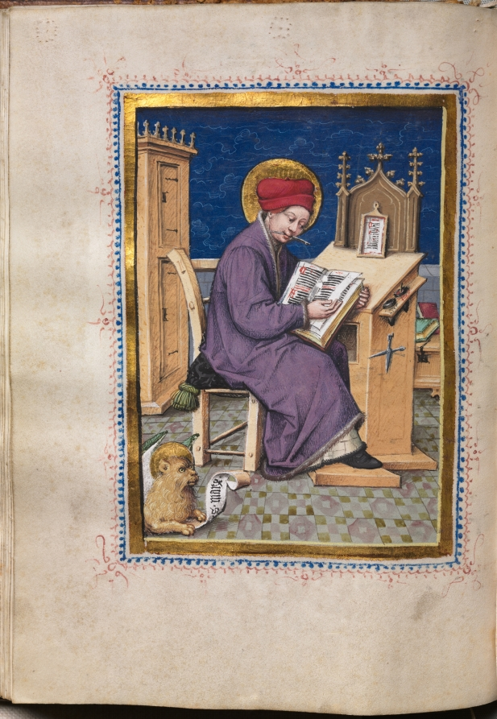
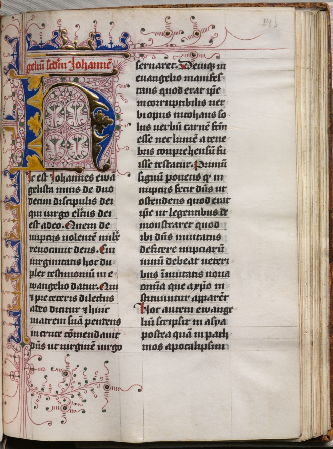

i saved this for you · file no. 7 · the comedy drawer
graffiti, gravestones, the margins of holy books & one (1) bored old man — proof.
i went looking through two thousand years of stuff people made and i kept finding the same thing: solemnity jokes. someone scratching a complaint into a wall. a monk drawing on his own homework. a dead man getting the last laugh. here's the pile. i pinned a face next to each one so you can see they were really there, really kidding.

he's almost 2,000 and he is LAUGHING
someone wanted a dog with a goofy open grin so they made one — and here he still is, glaze still shining like he wants to be petted. i think about that more than i'd admit.
pompeii inn · scratched into the plaster · ~1,900 yrs ago
“We have urinated in our beds… there was no chamber pot.”
Unknown guest & innkeeper, Pompeii · Open Culture, citing Pompeii archaeological records
two thousand years, and the most durable human thing turns out to be an excuse. with a witness. they BOTH wrote on the wall. unbelievable.
↓ the monks. doing the most boring job on earth. and saying so. ↓

illuminated manuscript · pinned here for the mood (no jokes survive on this exact page — but the next one's full of them)
in the margin · by someone who was DONE
Thank God, it will soon be dark.
Medieval scribe, name lost · manuscript marginalia
six words. just a guy counting the hours till he can stop. i have texted this exact sentiment about a spreadsheet.

manuscript leaf, margins & rubrication · mood image, uncredited
also in the margin · the body keeps the score
“Writing is excessive drudgery. It crooks your back, it dims your sight, it twists your stomach and your sides.”
Anonymous scribe · manuscript marginalia
he complained about the work… in the work. in tiny letters nobody was ever meant to read. and here we are. reading.
four words. funny until it isn't — then it's the truest thing anyone ever carved on their own grave.
Edward Lear, on the subject of one (1) bee
There was an Old Man in a tree,
Who was horribly bored by a bee.
When they said “Does it buzz?”
He replied “Yes, it does!
It’s a regular brute of a bee!”
Edward Lear · There Was an Old Man in a Tree · PoetryDB
a whole tiny universe of being SO done with one small thing. i've been this old man. you've been this old man.
Jonathan Swift describes a scam · ~1733
Lend these to paper-sparing Pope;
And when he sets to write,
No letter with an envelope
Could give him more delight.
When Pope has fill’d the margins round,
Why then recall your loan;
Sell them to Curll for fifty pound,
And swear they are your own.
Jonathan Swift · Advice to the Grub Street Verse-writers · PoetryDB
broke poets lend pope their garbage just so he'll scribble genius in the margins — then sell the pages back claiming the whole thing was theirs. 300 years old and still the funniest hustle i know.
and one for the road — W. E. Henley turns death into a vaudeville bit
But she’s heard it all before,
Well she knows you’ve had your fun,
Gingerly she gains the door,
And your little job is done.
William Ernest Henley · Madam Life’s a Piece in Bloom · PoetryDB
life's the charming roommate, death's the debt collector with his knees on your ribs — and at the end life just… walks out. doesn't even look back. she's seen this show a thousand times.
that's the pile. people scratching jokes onto walls and graves and the edges of holy books, centuries deep, never once as solemn as the history books pretend. ok. i have to sleep. but look at the dog one more time before you go. ↑